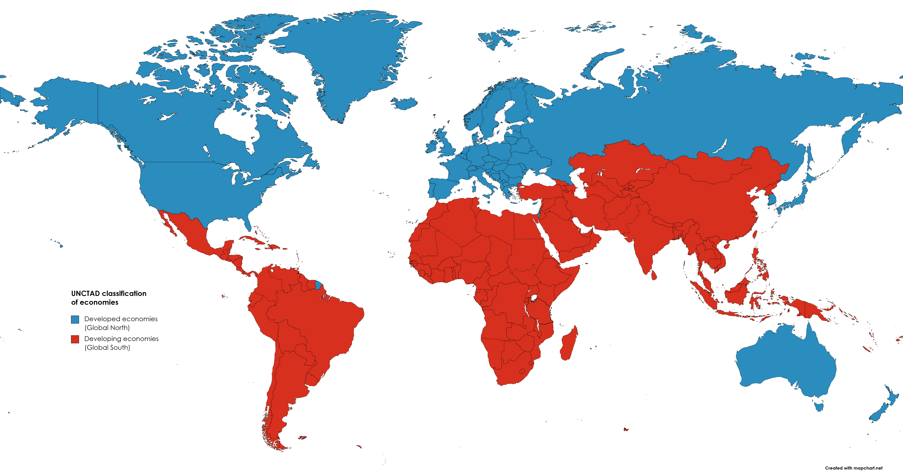

The Global South
Countries in the Global South are located in the red, they typically have history of issues such as colonialism, geograph, and/or corrupt government leading most of these countries categorized into developing countries. This study focuses on developing countries as a whole that are typically located in the Global South.
Countries in the Global South face a variety of challenges that hinder their development and economic progress. One significant historical factor is colonialism, which has left a lasting impact on the political, economic, and social structures of these countries. Many former colonies were left with arbitrary borders that have led to internal conflicts, as well as economies oriented toward the export of raw materials to all former colonial powers, limiting their industrial base and economic diversification.
Geography also plays a crucial role in the development of countries in the Global South. Many of these countries are located in tropical zones, which can pose challenges such as a high prevalence of disease, difficulties in agriculture due to pests or unpredictable weather, and vulnerability to natural disasters such as hurricanes, floods, and droughts. These geographic challenges often compound economic and social difficulties.
Corrupt governance is another critical barrier to development in many countries in the Global South. Corruption can deter foreign investment, misdirect funds intended for development, and undermine the rule of law, leading to social instability and reduced economic growth. In some cases, corruption is a legacy of colonial administration systems that were designed to exploit rather than to develop the local economies.
Despite these challenges, countries in the Global South have demonstrated considerable resilience and potential for growth. Increasingly, these countries are focusing on strategies using information and communication technologies in order to improve governance, education and healthcare, diversifying their economies away from reliance on raw material exports, and enhancing general infrastructure. These efforts are crucial for creating a sustainable development path that can lead to higher living standards and reduced poverty.